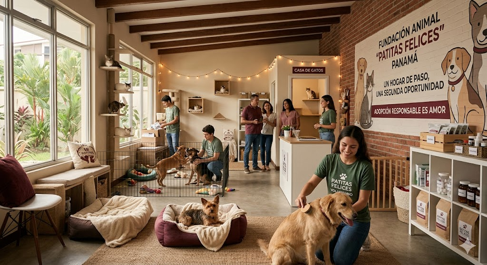
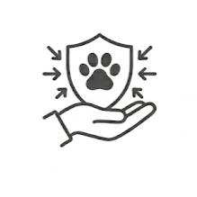

¿Perdiste o encontraste una mascota? Llama al (702) 555-GUAU para recibir ayuda
¿Perdiste o encontraste una mascota? Llama al (702) 555-GUAU para recibir ayuda
Patitas Felices nació en el año 2021 como una iniciativa comunitaria enfocada en el rescate y cuidado de perros y gatos en situación de abandono. Todo comenzó con un pequeño grupo de voluntarios que brindaba apoyo temporal a animales encontrados en las calles y coordinaba adopciones responsables mediante redes sociales y jornadas comunitarias. Con el tiempo, la fundación amplió sus actividades incorporando campañas de esterilización, atención veterinaria básica y programas de concientización sobre el cuidado responsable de las mascotas. Actualmente, Patitas Felices continúa trabajando junto a voluntarios, familias y colaboradores comprometidos con mejorar la calidad de vida de los animales rescatados.


En Patitas Felices trabajamos para rescatar, proteger y reubicar perros y gatos en situación de abandono, brindándoles atención veterinaria, alimentación y espacios seguros mientras encuentran un hogar responsable. También desarrollamos actividades de concientización y apoyo comunitario para promover el respeto, el cuidado adecuado y la adopción responsable de los animales.

Nuestra visión es consolidarnos como una fundación comprometida con el bienestar animal, reconocida por generar oportunidades reales de rescate y adopción responsable. Buscamos fortalecer el vínculo entre las personas y los animales mediante iniciativas comunitarias, educación sobre tenencia responsable y programas que contribuyan a disminuir el abandono animal en nuestra comunidad.